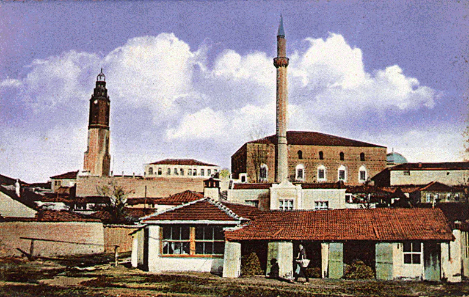

Açıklama
19. yüzyılın ortalarında fotoğraflanan Burmalı Camii: Vardar'ın sağ kıyısındaki tek cami, Taş Köprü'nün hemen yanında. Adını minaresinin burmalı gövdesinden aldı. 15. yüzyılın sonunda yapıldı, yerine Subaylar Evi yapılabilsin diye 1925'te yıkıldı.

Burmalı Camii ve çevresinde yapılmış birkaç bina. Düzenlenmemiş bir sokak. Öküz arabalarıyla ticaret malı taşıyan arabacıların toplanma yeri. - 19. yüzyılın sonu

Burmalı Camii - 1912 - 1918. Taş Köprü'ye güneyden yaklaşım, sık dizilmiş tüccar ve zanaatkâr dükkânlarıyla.

Taş Köprü'nün bir bölümü ve yanındaki gezinti yoluyla Burmalı Camii. Solunda, Taş Köprü'nün hemen girişinde dükkânların ve zanaatkârların bulunduğu binalar. - 1910'lar.

Burmalı Camii - 1920'lerin başı. Köprünün önünde gelip geçenler ve satış için ilk büfeler. Büfelerin, özellikle çatılarında, kendine özgü mimari ayrıntıları var.

Burmalı Camii - 1920.

Türbesiyle Hatuncuk Camii. Arka planda Yahya Paşa Camii'nin minaresi. Hatuncuk Camii 1511 tarihlidir ve Yahya Paşa'nın kızlarından Hani Hatun tarafından yaptırıldı. Adı Hatuncuk, küçük hanım ya da genç hanım demektir. - 19. yüzyılın sonu.

Hacı Balaban Camii. Kurşunlu Han ile Dukkancık Camii arasındadır. 15. yüzyılda yapıldı. (19. yüzyılın sonu)

Bey Kulesi (ya da Feodal Kule). Bu kule bir beye aitti. Bugünkü Makedonya Cumhuriyeti Ordu Evi'nin ana girişinin önündedir. Ne zaman yapıldığı bilinmiyor, ama muhtemelen 17. yüzyılın sonu ya da 18. yüzyılın başında. Fotoğraf 19. yüzyıldan.

19. yüzyılın sonunda Bey Kulesi.

20. yüzyılın başında Bey Kulesi.

Bey Kulesi, 1910'lar.

Kurşunlu Han'ın hemen yanındaki eski Kazancılar Camii. 15. yüzyılda yapıldı, kazancılar camii olarak bilinirdi. (bugün mevcut değil)

16. yüzyılın ortasında inşa edilen Dukkancık Camii.

16. yüzyılın ortasında yapılan Kurşunlu Han, İslami sivil mimarinin anıtsal bir örneğidir. Eski Üsküp çarşısında, bugünkü Makedonya Müzesi'nin hemen yanındadır.

Saat Kulesi ve Sultan Murat Camii - 1920'ler. Saat Kulesi 16. yüzyılın ortasında (1566-1572) yapıldı; Osmanlı devletindeki ilk saat kulesidir. Saat mekanizması ve ona bakacak usta, Türkler kasabayı aldıktan sonra Macaristan'daki Zigetvar'dan getirildi. Sultan Murat Camii: Fatih Sultan Mehmet'in babası Sultan II. Murat bu camiyi 1436'da vakıf olarak yaptırdı.

Sultan Murat Camii, 1910'lar.

Saat Kulesi ve Sultan Murat Camii - 1920'ler.

Saat Kulesi ve Sultan Murat Camii - 1920'ler.

Saat Kulesi ve Sultan Murat Camii - 1920'ler.

Saat Kulesi ve Sultan Murat Camii - 1920'ler.

Gazi İsa Bey Camii - 1920'ler. İshak Bey'in oğlu İsa Bey, babasının ölümünden sonra camiyi vakıf olarak yaptırdı. (15. yüzyıl)

Gazi İsa Bey Camii - 1920'ler. İshak Bey'in oğlu İsa Bey, babasının ölümünden sonra camiyi vakıf olarak yaptırdı. (15. yüzyıl)

Gazi İsa Bey Camii - 1920'ler. İshak Bey'in oğlu İsa Bey, babasının ölümünden sonra camiyi vakıf olarak yaptırdı. (15. yüzyıl)

Gazi İsa Bey Camii - 1920'ler.

Türk mezarlığı, arka planda Gazi İsa Bey Camii - 1920'ler.

Gazi İsa Bey Camii - avlu - 1920'ler.

Gazi İsa Bey Camii - avlu - 1920'ler.

Mustafa Paşa Camii - 1920'ler. 1492'de dönemin komutanı Mustafa Paşa tarafından yaptırıldı.

Mustafa Paşa Camii - 1920'ler. 1492'de dönemin komutanı Mustafa Paşa tarafından yaptırıldı.

Mustafa Paşa Camii - 1920'ler.

Arka planda Mustafa Paşa Camii, altında kısmen Üsküp'ün en eski camisi olan Paşa Yiğit Bey Camii görülüyor. (bugün mevcut değil) - 1920'ler.

Arka planda İshak Bey Camii ya da Alaca Camii ile şehrin eski kısmında bir sokak. Bu cami 15. yüzyılın ilk yarısında, 1438'de Üsküp komutanı İshak Bey (Üsküp fatihi Paşa Yiğit Bey'in oğlu) tarafından yaptırıldı. Vakıf olarak caminin yanı sıra türbe, medrese, hanlar ve İslami sivil mimariye ait yapılar da yaptırdı. 1519'da İshak Bey'in torunu Mehmed camiyi yeniden yaptırdı ve iki yan nefi ekledi - 1920'ler.
Konum

Eski yönlendirme haritasında
Fotoğraf albümü

Konu
 Su kemeri4 kartpostal
Su kemeri4 kartpostal Kale30 kartpostal
Kale30 kartpostal Köprüler60 kartpostal
Köprüler60 kartpostal Rıhtım58 kartpostal
Rıhtım58 kartpostal Meydan46 kartpostal
Meydan46 kartpostal Binalar66 kartpostal
Binalar66 kartpostal Hristiyan kiliseleri19 kartpostal
Hristiyan kiliseleri19 kartpostal İslami yapılar33 kartpostal
İslami yapılar33 kartpostal Subaylar Evi29 kartpostal
Subaylar Evi29 kartpostal Tiyatro28 kartpostal
Tiyatro28 kartpostal Tren garı13 kartpostal
Tren garı13 kartpostal Okullar36 kartpostal
Okullar36 kartpostal Parklar12 kartpostal
Parklar12 kartpostal Pazarlar18 kartpostal
Pazarlar18 kartpostal Sokaklar38 kartpostal
Sokaklar38 kartpostal Panorama I60 kartpostal
Panorama I60 kartpostal Panorama II30 kartpostal
Panorama II30 kartpostal Kolajlar55 kartpostal
Kolajlar55 kartpostal Seller9 kartpostal
Seller9 kartpostal Deprem27 kartpostal
Deprem27 kartpostal Üsküp 200026 kartpostal
Üsküp 200026 kartpostal